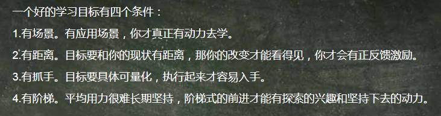

一 学习方法： 我们现在已经找到了一种最好的学习方式。这种学习方式就叫做“任务式学习”——用真实的任务、项目、目标来牵引自己的学习
二 寻找学习资源的三种方式：
第一种，也是最简单的方式，搜索。
我就推荐第二种方式，就是用好得到这样的专业学习平台。
我最推荐第三种方式，跟人学。这是我心目中最了不起的学习方式，也是一种学习的捷径，直接和有最好的头脑、优秀的人交流，肯定是咱们获取新知识、新思想最快的方式。我可以给你一套方法，叫三级导师制，分三级找到自己的导师。这三级分别是：入门、进圈和拜佛。甚至就是让他开两张单子，一张写这个领域最牛的人，一张写这个领域最值得看的书。
不是有了牛人就一定自己能学好，需要会问好问题：
1.请问在像您这样的专家心目中，您这个领域公认的大神是谁？
2.我特别遗憾，我一直没有机会系统地去学，您这个领域的知识。我四十多岁了，想从现在开始学起，那在入门阶段，您推荐我读哪本书？
3.老师，我想在大学毕业之后从事投资工作。您是做投资的，您觉得从事这一行业基本能力的要求是什么？我应该从哪开始作准备
4.老师，从事这个行业，您觉得最关键的环节有哪些？您都遇到过哪几个重要挑战？您是怎么过来的？
5.在您这个领域，您觉得一般人和高手之间最大的区别是什么？
6.如果您要带一个徒弟，您会重点教他关注哪几个魔鬼细节？为什么是这几个细节特别重要？
7.老师，最近好长时间没见了，最近半年您觉得有什么问题、什么新闻或者哪本书，是对您触动特别大的吗？(比较轻松的话题，在闲谈的时候，最适合问这样的问题)
8.最近你们行业发生了一件XXX大事，您能帮我分析分析，这背后到底是怎么回事吗？（就是当你和这个行业的专家建立联系之后，你可以定期用“事”去验证他）
9.老师，我现在此时此刻已经在做一件什么事。这个事，我有个难点一直没想明白，能不能请您给我指点一下（让那些行业大神们在关键点上，帮你点拨一下，输入一点真气，咱立马就能再上一层楼）
10.假如，此刻是你生命的最后十分钟。你有个机会，可以给这个世界留下一段话，说说你自己这个专业。请问你会说什么（这个问题轻易别用，但是每次用都有神奇的收获。为什么？因为这个限制太极端了，不过，极端的限制能够倒逼灵感和创新，你能把这位老师压箱底的洞察，给逼出来。）
1 | 我目前的追求的目标是什么？ | |
2 | ||
3 |
样搜索得更准确？
1.善用关键词。在关键词搜索的时候，有个障碍：如果这个词包含的含义太多了，前几个页面都是无关信息。所以需要把形容词副词去掉，只留名词作为主干信息来搜索。
2.当你想搜索的内容，同时包含了两个或以上的关键词，可以用空格来隔开，例如「罗胖 罗振宇」；而当你想搜索的内容只需要包含多个关键词里的任意一个，可以用竖线（｜），例如「得到｜罗振宇」。
3.很多人在搜索的时候，只会用直接的关键词。这样搜索到的信息，不仅有限，还会跟别人搜出来的很雷同。其实，你可以通过不同关键词的组合，来挖掘出更多隐含的信息。举个例子，假如你想在成都找一个大型场馆。第一反应可能是搜索“成都 场馆”，但你还可以把关键词设为“成都 演唱会”，你就能搜到以往在成都开过演唱会的场地。搜这些场地，就相当于有人帮你筛选了一层信息，比你直接搜“成都 场馆”更好。
4.当你想让搜索的内容不包含某些关键词，可以用减号“-”来避开干扰信息。比如你想搜罗振宇的信息，但不想看到跟得到有关的信息，就可以用「罗振宇 -得到」。注意：减号前面有空格，后面没空格。这个用处还能帮你避免广告，比如「托福考试 -广告 -推广」。
5.当你希望精准搜索的时候，比如你想搜一句话，这个话一个字都不能少，你就可以加个双引号。比如「“脱不花·30天沟通训练营”」，搜出来的页面只会出现完整的一整句话相关的页面，而不会出现只跟“脱不花”有关，或者只跟“沟通”有关的信息页面。
6.当我们输入关键词的时候，只要是文稿中含有这个关键词，这些页面都会被搜索出来。如果你只想看到标题中有这个关键词的网页，那就可以在前面加个搜索指令：intitle，比如你输入「intitle：跨年演讲」，就只能搜出来标题中含跨年演讲的网页。
7. 在用百度、谷歌等搜索引擎的时候，搜索框下面有个下拉菜单，可以选择时间期限内发布的网页。
8.当你想在某个特定网站上搜索某个信息，就可以运用搜索指令“site”。比如，你想在得到网页里搜索冬奥会相关的信息，可以在google搜索「冬奥会 site:dedao.cn」；使用这个方法，也可以搜索一类后缀的网站，例如你想搜集政府网站关于社保的内容，可以搜索「社保 site:gov.cn」
9.当你想搜索影视、音乐、图书相关的内容，加上书名号《》会帮你避免很多麻烦。比如搜索「《格局》」这本书，加上书名号，就能排除其他信息。
10.当你想快速找到某类文件，可以运用文件类型的搜索指令“Filetype”。比如你想搜索某公司研报，你就可以列「600519 深度研究 Filetype：pdf」，600519是上市公司代码，「Filetype：pdf」是定义文件格式，就能定向搜到该公司研报。
注：资源获取途径《得到 脱不花 怎样获取更好的学习资源》
三.制定一个合理的目标
一个合理的学习目标，至少要满足四个条件：
第一个叫有场景。（注：就是我们的学习后的应用是什么，这样便有了动力）
第二个叫有距离。
第三个叫有抓手。（注：就是有明确的细节，例如每天读书5页）
第四个叫有阶梯。

四. 学习方法